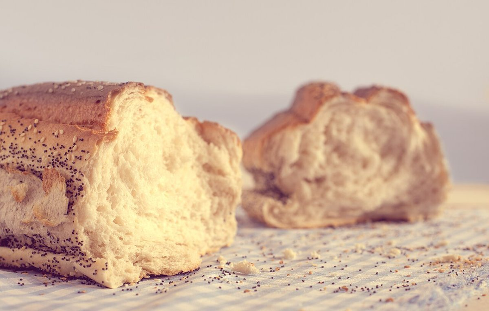
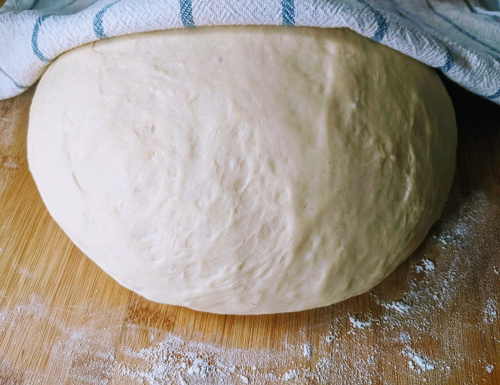
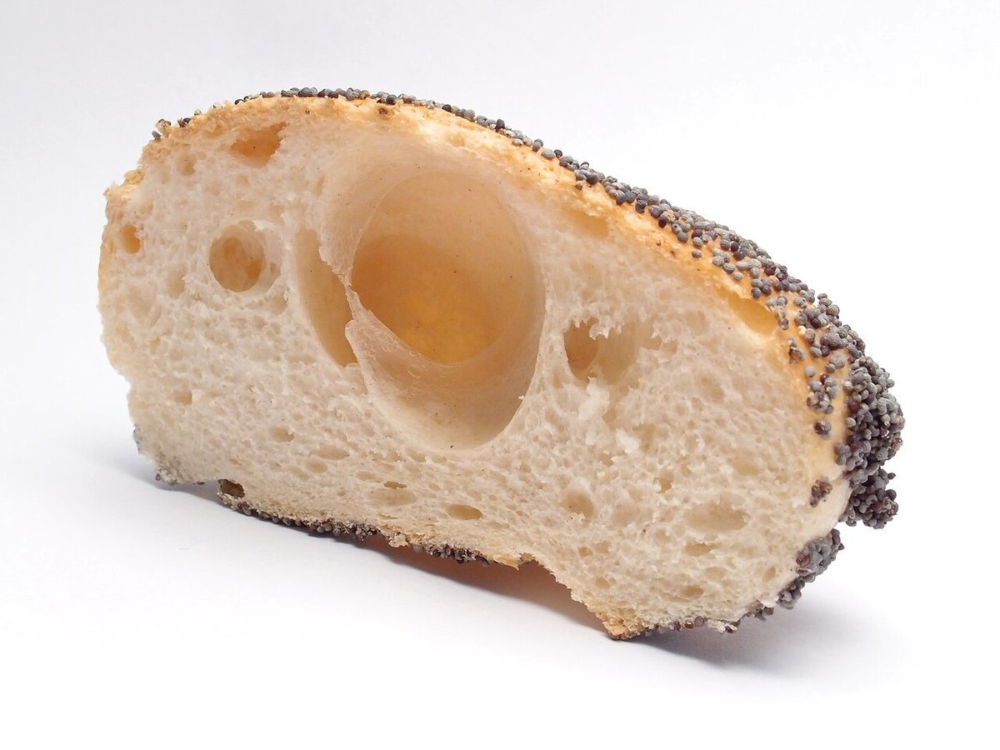
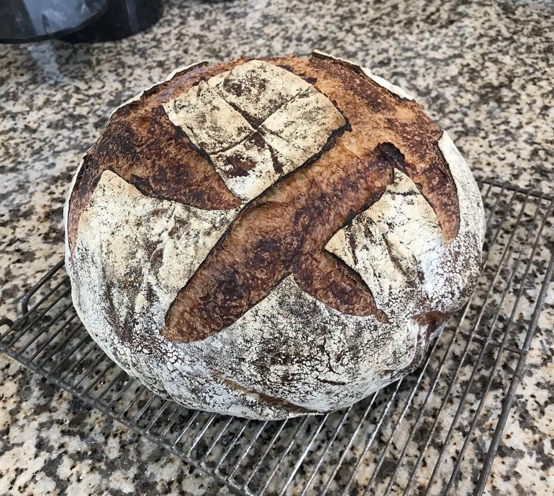

店のこと
確認できているのは、所在地・電話番号・Instagramです。
確認できていること
わかっている情報
- 店名は「hara peco pain」、業種はパン屋
- 所在地は三重県四日市市笹川１丁目８１
- 電話番号は059-329-5077
- Instagramは @harapeco.pain
- 営業時間・定休日・メニュー・価格・ご予約・駐車場は準備中

想像してみる
屋号の3つの語
ここは制作側が想像して書いた部分です。屋号の由来や読み方は分かりません。お店の実際の様子・考え・メニューとは関係がありません。
HARA
H4×2A2×1R7×3A2×1
4272PECO
P7×1E3×2C2×3O6×3
7326PAIN
P7×1A2×1I4×3N6×2
7246「HARA」は「はら」、「PECO」は「ぺこ」と読めそうです。「PAIN」はフランス語でパンを意味する綴りです。続けて「はらぺこ」と読めるのかもしれない、というのが制作側の想像です。


